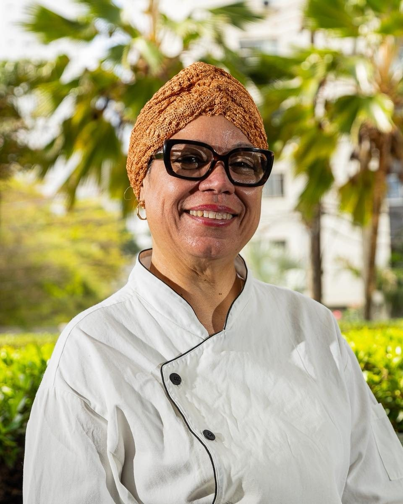

Início · De Dona Zu para Cláudia
De Dona Zu para Cláudia
O Sabor da Zu “nasceu como uma homenagem à Dona Zu, mãe e inspiração da família”. Hoje, quem está na cozinha é a filha.
Dona Zu
Zuleide Santana, a mãe
“Zu” é Dona Zuleide Santana. Segundo o Correio (16/04/2025), o restaurante “passou da mãe Zuleide Santana para a filha Ana Cláudia Santana, que faz uso dos temperos da matriarca”.
“A comida raiz está no sangue 💛 Cláudia cresceu vendo a mãe cozinhar e hoje leva essa tradição para cada prato do Sabor da Zu. Comida de família, memória e muito sabor 🥘”Sabor da Zu, no Instagram (29/09/2026)
2015
Começou com quentinhas no Itaigara
“O sabor da Zu nasceu em 2015, empresa familiar, iniciamos nossas atividades vendendo quentinhas na região do Itaigara, logo caímos no encantamento de muitas pessoas que trabalhavam nas imediações.”Sabor da Zu, na ficha do Google
2016
A quiabada de frango no Panela de Bairro
Em agosto de 2016, a casa venceu o Panela de Bairro, quadro do Bahia Meio Dia, da TV Bahia, com a quiabada de frango. É o que diz até hoje a bio do Instagram: “Campeã Panela de Bairro da TVBa”.
“Fomos campeã em agosto de 2016, com cerca de 236 mil votos, com o prato quiabada de frango.” (ficha do Google)
Na cozinha
Ana Cláudia, chef do Sabor da Zu

“O diferencial é o tempero, porque é feito com amor e nós utilizamos o que há de melhor a nível de condimentos e produtos. Não economizamos esforços para poder proporcionar ao cliente uma experiência gastronômica única”Ana Cláudia Santana, ao Correio (16/04/2025)
2026
A casa nova da R. Maranhão
Depois de Campinas de Brotas, a casa inaugurou o endereço da R. Maranhão, 445, na Pituba, perto da Lagoa dos Patos, em 28 de maio de 2026 (Pituba 24 Horas). O cardápio trouxe “feijoada completa, o já famoso Xinxim de Bofe, Bobó de Camarão, moquecas, strogonoffs e diversos pratos executivos”.
Endereço e horárioDúvidas frequentes
Perguntas comuns
Quem é a Zu?
Dona Zuleide Santana, mãe de Cláudia e inspiração da família.
Ainda tem a quiabada de frango?
Ela não está no cardápio atual da loja on-line: pergunte pelo WhatsApp.
Peça agora
Comida baiana de família, direto no seu WhatsApp.
Monte o pedido, mande a mensagem e combine entrega ou retirada com a casa, sem comissão de aplicativo.